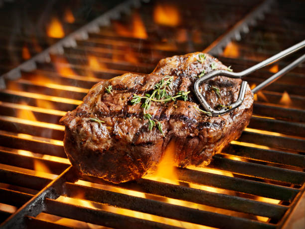
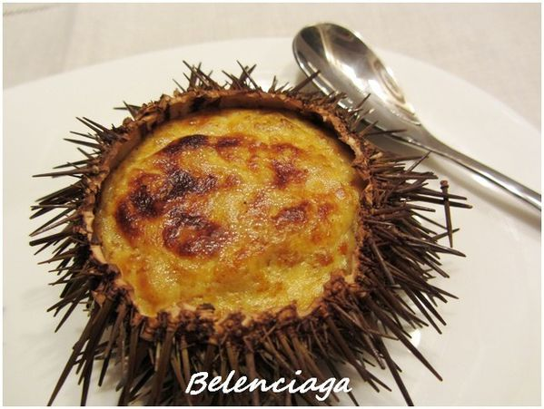
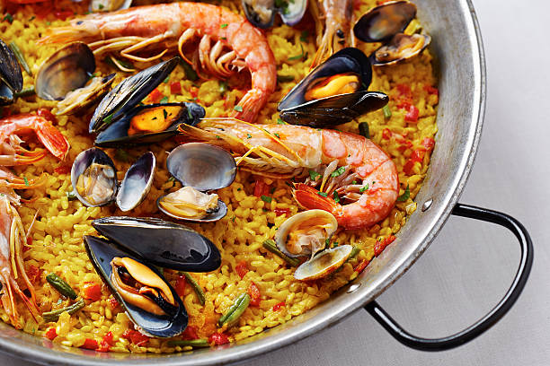

Gastronomia
Barbacoas: Se suelen hacer en familia para pasar un buen rato o cuando a alguien le dan la libertad.

Erizos: Estan mortales uno de los mejores platos que se suelen hacer en patrocinio.

Paella: De las mejorcitas comidas que te pueden hacer para comer.
